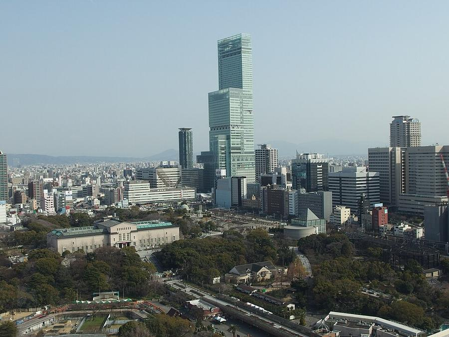
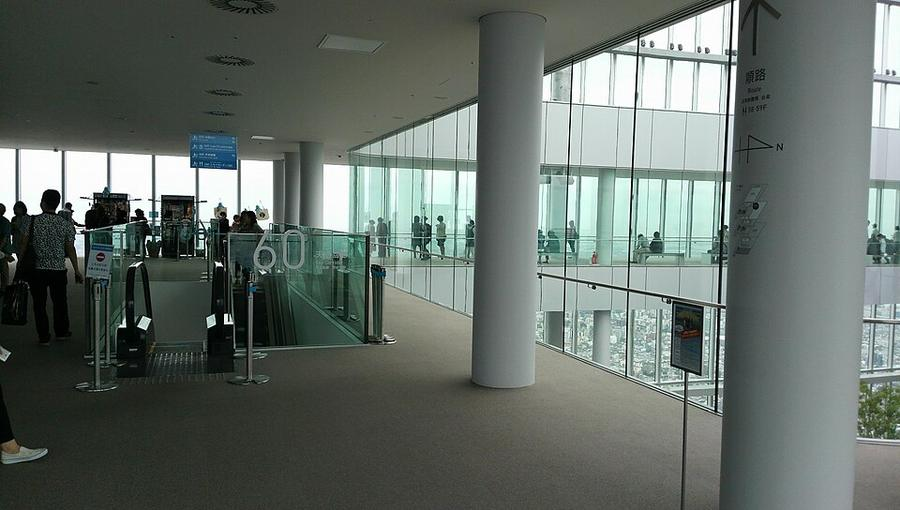
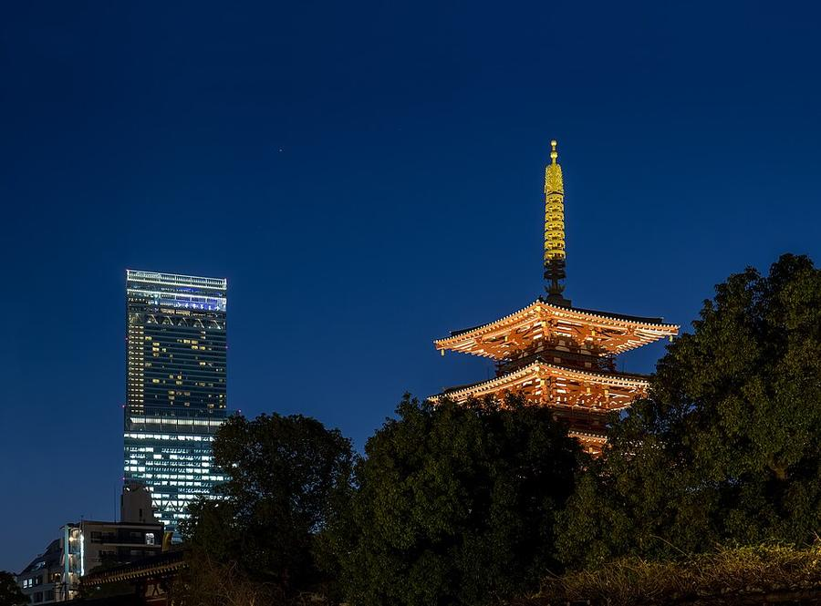

11Abeno Harukas 300
あべのハルカス 展望台 · Юг · Namba, Shinsekai, Tennoji
В плане на Вс 25.10 - смотреть день



Abeno Harukas - 300 м, 62 этажа, самое высокое здание Японии в 2014-2023 годах. Смотровая Harukas 300 наверху: стеклянные стены от пола до потолка, город до гор и залива.
Под крышей, поэтому подходит на вечер воскресенья, когда дождь усилится. Закат 25.10 в 17:11, если облака дадут его увидеть.
| Часы | 9:00-22:00, вход до 21:30 |
|---|---|
| Вход | 2 000-2 200 ¥ (источники расходятся) |
| Наши даты | открыто 24-26.10 |
| На месте | 45-60 мин |
| Дождь | 🏠 под крышей, в дождь - да |
Источник часов и цен: osaka-info.jp, JTB; официальный сайт не открылся
Как добраться от отеля
- Метро Midosuji от Umeda до конечной Tennoji, 17 мин. Вход в здание из станции.
- Обратно: Tennoji → Umeda, 16 мин, платформа 3, поезд на Minoh-kayano (箕面萱野).
Видео


.jpg){kind=link}


_-_9978.jpg){kind=link}
Рядом

12. ShitennojiСамый старый государственный храм Японии, 593 год

10. Shinsekai и башня TsutenkakuРетро-квартал 1912 года, кушикацу, башня 1956 года
Фото: Wikimedia Commons, автор и лицензия под каждым. Поезда: Yahoo!乗換案内 на 24-26.10.2026, пешие отрезки: OSRM. Часы и цены проверены 24.10.2026 13:50 JST. ← ко всем местам